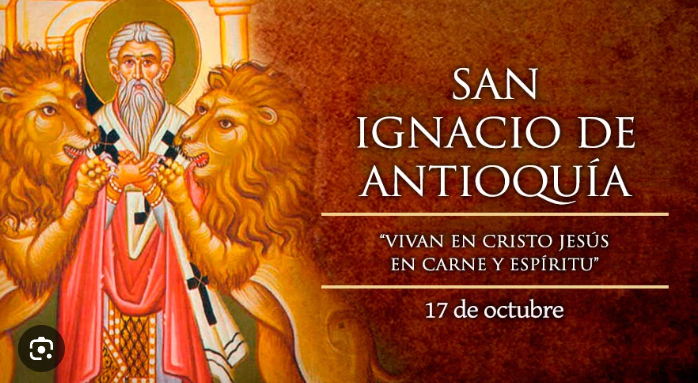
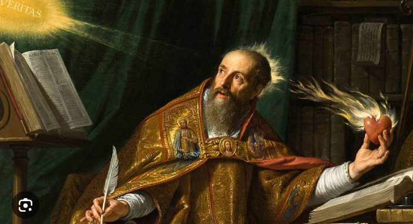

IGNACIO DE ANTIOQUIA 17/10

"UBI MAIOR LABOR, IBI MULTA LUCRI EST."
- "ALLÍ DONDE HAY MÁS LABOR, HAY MUCHA GANANCIA"
"MULTUM DOCEMUR VERBIS, SED MAGIS FACTIS, ET MULTO MAGIS ESSE."
- "SE EDUCA MUCHO CON AQUELLO QUE SE DICE, PERO MÁS CON AQUELLO QUE SE HACE, Y MUCHO MÁS CON AQUELLO QUE SE ES"
"HAE DUAE VIRTUTES PRINCIPIUM ET FINEM VITAE SUNT: FIDES PRINCIPIUM, ET CARITAS FINIS EST."
- "ESTAS DOS VIRTUDES SON EL PRINCIPIO Y EL FIN DE LA VIDA: LA FE ES EL PRINCIPIO Y EL AMOR ES EL FIN"
"MELIUS EST CHRISTIANUM ESSE ET NON DICERE, QUAM DICERE ET NON ESSE."
- "ES MEJOR SER CRISTIANO SIN DECIRLO QUE PROCLAMARLO SIN SERLO"
"FIRMI MANETE, SICUT INCUS CAEDI."
- "MANTENERSE FIRMES, COMO EL YUNQUE AL SER GOLPEADO"
GLORIA DEI EST UT HOMO VIVAT, VITA HOMINIS EST VISIO DEI
- LA GLORIA DE DIOS ES QUE EL HOMBRE VIVA, LA VIDA DEL HOMBRE ES LA VISIÓN DE DIOS
San Ignacio de Antioquía (35 – 107 d.C.) fue uno de los Padres Apostólicos y es considerado uno de los grandes mártires del cristianismo primitivo. Fue el tercer obispo de Antioquía, sucediendo a San Pedro y a Evodio.
Nacimiento: Nació hacia el año 35 d.C. en Siria.
Obispado: Ignacio se convirtió en obispo de Antioquía alrededor del año 70 d.C. Durante su tiempo como obispo, fue un ferviente defensor de la fe cristiana.
Cartas: Camino a su martirio, Ignacio escribió siete cartas a diversas comunidades cristianas (a las Iglesias de Esmirna, Filadelfia, Roma, entre otras), las cuales son de gran valor teológico. En ellas, destacó temas como la unidad de la Iglesia, la importancia del obispo, la Eucaristía y la fidelidad a Cristo.
Martirio: En el año 107 d.C., durante la persecución del emperador Trajano, Ignacio fue arrestado y enviado a Roma para ser ejecutado. En su carta a los romanos, expresó su deseo de sufrir por Cristo, refiriéndose a sí mismo como “trigo de Dios” que sería molido por los dientes de las fieras en el anfiteatro.
Muerte: Ignacio murió devorado por las fieras en el Coliseo de Roma, alrededor del año 107 d.C., convirtiéndose en uno de los primeros mártires.
Legado:
San Ignacio es conocido por su profundo testimonio de fe y sus cartas, que han influido en la comprensión de la organización eclesial, la autoridad de los obispos y la Eucaristía. Se le recuerda como un símbolo de valentía y fidelidad hasta el martirio.
AGUSTIN DE HIPONA 28/08

"IN NECESARIIS UNITAS, IN DUBIIS LIBERTAS, IN ÓMNIBUS CARITAS"
- EN LO ESENCIAL UNIDAD, EN LO DUDOSO LIBERTAD, EN TODO CARIDAD
"AMA ET FAC QUOD VIS. SI TACES, TACEBIS CUM AMORE; SI CLAMAS, CLAMABIS CUM AMORE; SI CORRIGES, EMENDABIS CUM AMORE, SI IGNOSCES, DIMITTEBIS CUM AMORE. "
- "AMA Y HAZ LO QUE QUIERAS. SI CALLAS, CALLARÁS CON AMOR; SI GRITAS, GRITARÁS CON AMOR; SI CORRIGES, CORREGIRÁS CON AMOR, SI PERDONAS, PERDONARÁS CON AMOR."
EJUS TE VACARE ESSE DEBES, QUO PLENUS ES, UT EO REPLEARIS QUO INANIS ES.
- "DEBES VACIARTE DE AQUELLO CON LO QUE ESTÁS LLENO, PARA QUE PUEDAS SER LLENADO DE AQUELLO DE LO QUE ESTÁS VACÍO."
"DEUS NON IMPOSSIBILIA IMPERAT, SED, IUBENDO QUOD IUBET, INUITAT UT FACIAS QUOD POTES ET PETIS QUOD NON POTES ET ADIUUA UT POSSIS".
- "DIOS NO MANDA COSAS IMPOSIBLES, SINO QUE, AL MANDAR LO QUE MANDA, TE INVITA A HACER LO QUE PUEDAS Y PEDIR LO QUE NO PUEDAS Y TE AYUDA PARA QUE PUEDAS."
AMOR HANC ECCLESIAM, IN HAC ECCLESIA MANE, HAC ECCLESIA SIT.
- AMAD A ESTA IGLESIA, PERMANECED EN ESTA IGLESIA, SED VOSOTROS ESTA IGLESIA.
"BONOS PROBATE, MALOS TOLERA ET OMNES AMATE."
- APRUEBA A LOS BUENOS, TOLERA A LOS MALOS Y ÁMALOS A TODOS.
"CREDO UT INTELLIGAM, ET INTELLIGO UT MELIUS CREDAM."
- CREO PARA COMPRENDER, Y COMPRENDO PARA CREER MEJOR.
DA QUOD HABES UT MEREARIS ACCIPERE QUOD DESIDERAS.
- DA LO QUE TIENES PARA QUE MEREZCAS RECIBIR LO QUE TE FALTA.
"QUOD MAXIME NOCET DEO POST PECCATUM, TRISTITIA EST, QUIA DISPONIT AD PECCANDUM."
- LO QUE MÁS APENA A DIOS DESPUÉS DEL PECADO ES LA TRISTEZA, PORQUE NOS PREDISPONE AL PECADO.
DICUNT IN CAELO HALLELUJAH, QUIA IN TERRA DICTI AMEN
- EN EL CIELO DICEN ALELUYA, PORQUE EN LA TIERRA HAN DICHO AMÉN.
"ERRARE HUMANUM EST, SPONTE PERSEVERARE IN ERRORE DIABOLICUM.".
- EQUIVOCARSE ES HUMANO, PERSEVERAR VOLUNTARIAMENTE EN EL ERROR ES DIABÓLICO.
"LEX DATA EST UT IMPLORETUR GRATIA; GRATIA DATA EST UT SERVETUR LEX."
- LA LEY HA SIDO DADA PARA QUE SE IMPLORE LA GRACIA; LA GRACIA HA SIDO DADA PARA QUE SE OBSERVE LA LEY.
"MENSURA AMORIS EST AMARE SINE MENSURA."
- LA MEDIDA DEL AMOR ES AMAR SIN MEDIDA.
"NECESSITAS LEGES NON NOVIT."
- LA NECESIDAD NO CONOCE LEYES.
"OTIOSITAS LENTE AMBULAT, IDEO OMNES VICIA EAM APPREHENDUNT."
- LA OCIOSIDAD CAMINA CON LENTITUD, POR ESO TODOS LOS VICIOS LA ALCANZAN.
"SUPERBIA NON EST MAGNITUDO SED INFLATIO; ET QUOD INFLATUM EST, MAGNUM VIDETUR, SED NON SANUM EST."
- LA SOBERBIA NO ES GRANDEZA SINO HINCHAZÓN; Y LO QUE ESTÁ HINCHADO PARECE GRANDE PERO NO ESTÁ SANO.
QUI VERITATE VINCERE NOLUNT, ERRORE VINCUNTUR."
- LOS QUE NO QUIEREN SER VENCIDOS POR LA VERDAD, SON VENCIDOS POR EL ERROR.
"NEMO DEUM NEGAT, NISI QUI SIBI CONVENIT UT DEUS NON EXISTAT."
- NADIE NIEGA A DIOS, SINO AQUEL A QUIEN LE CONVIENE QUE DIOS NO EXISTA.
"AD VERITATEM NON PERVENITUR NISI PER AMOREM."
- NO SE ACCEDE A LA VERDAD SINO A TRAVÉS DEL AMOR.
"QUI TRIBULATIONES FERRE NON HABUIT, VERUS CHRISTIANUS NONDUM COEPIT ESSE."
- QUIEN NO HA TENIDO TRIBULACIONES QUE SOPORTAR, ES QUE NO HA COMENZADO A SER CRISTIANO DE VERDAD.
"ORA QUASI OMNIA A DEO PENDENT; LABORA QUASI OMNIA A TE PENDENT."
- REZA COMO SI TODO DEPENDIERA DE DIOS. TRABAJA COMO SI TODO DEPENDIERA DE TI.
"SI VIS HOMINEM NOSSE, NOLI EUM INTERROGARE QUID COGITET, SED QUID AMET."
- SI QUIERES CONOCER A UNA PERSONA, NO LE PREGUNTES LO QUE PIENSA SINO LO QUE AMA.
"OMNIS QUI CREDIT, COGITAT. QUIA FIDES, SI QUOD CREDITUR NON COGITATUR, NULLA EST."
- TODO EL QUE CREE, PIENSA. PORQUE LA FE, SI LO QUE SE CREE NO SE PIENSA, ES NULA.
"VERITAS EST SICUT LEO; NON DEBES EAM DEFENDERE. LIBERA EAM; IPSA SE DEFENDET."
- LA VERDAD ES COMO UN LEÓN; NO TIENES QUE DEFENDERLO. DÉJALA LIBRE; SE DEFENDERÁ A SÍ MISMA.
"SI IN TE RADICES AMORIS SUNT, NIHIL ALIUD NISI BONUM EX TALI RADICE PROCEDERE POTEST."
- SI ESTÁ DENTRO DE TI LA RAÍZ DEL AMOR, NINGUNA OTRA COSA SINO EL BIEN PODRÁ SALIR DE TAL RAÍZ.
"DEUS SEMPER CONATUR NOBIS BONA DARE, SED MANUS NOSTRAE NIMIS PLENAE SUNT AD ACCIPIENDUM."
- DIOS SIEMPRE ESTÁ TRATANDO DE DARNOS BUENAS COSAS, PERO NUESTRAS MANOS ESTÁN DEMASIADO LLENAS PARA RECIBIRLAS.
"NON EST COMMODUM ESSE PROPE LUCEM, SI OCULI CLAUSI SUNT."
- NO ES UNA VENTAJA ESTAR CERCA DE LA LUZ SI LOS OJOS ESTÁN CERRADOS.
"FIDES EST CREDERE QUOD NON VIDES; PRAEMIUM HUIUS FIDEI EST VIDERE QUOD CREDIS."
- LA FE ES CREER LO QUE NO VES; LA RECOMPENSA DE ESTA FE ES VER LO QUE CREES.
"DEUS AMAT SINGULOS EX NOBIS QUASI SOLUM UNUS EX NOBIS ESSET."
- DIOS NOS AMA A CADA UNO DE NOSOTROS COMO SI SOLO HUBIERA UNO DE NOSOTROS.
"BENE CANTARE EST BIS ORARE."
- CANTAR BIEN ES ORAR DOS VECES.
"INVENIAS QUANTUM TIBI DEDIT DEUS ET AB EO ACCIPE QUOD NECESSE EST; RELIQUUM ALII NECESSITANT."
- DESCUBRE CUÁNTO TE HA DADO DIOS Y DE ÉL TOMA LO QUE NECESITAS; EL RESTO LO NECESITAN OTROS.
"MIRACULA NON SUNT CONTRARIA NATURAE, SED TANTUM CONTRARIA IIS QUAE DE NATURA SCIMUS."
- LOS MILAGROS NO SON CONTRARIOS A LA NATURALEZA, SINO SOLO CONTRARIOS A LO QUE SABEMOS SOBRE LA NATURALEZA.
"PATIENTIA EST SOCIA SAPIENTIAE."
- LA PACIENCIA ES EL COMPAÑERO DE LA SABIDURÍA.
"SUPERBIA MUTAVIT ANGELOS IN DAEMONIA; HUMILITAS FACIT HOMINES ANGELOS."
- FUE EL ORGULLO LO QUE CAMBIÓ A LOS ÁNGELES EN DEMONIOS; ES LA HUMILDAD LO QUE HACE A LOS HOMBRES ÁNGELES.
"QUI NOS SINE NOSTRA AUXILIO CREAVIT, NON NOS SALVABIT SINE NOSTRO CONSENSU."
- EL QUE NOS CREÓ SIN NUESTRA AYUDA NO NOS SALVARÁ SIN NUESTRO CONSENTIMIENTO.
"NON EST SANCTUS SINE PRAETERITO, NON EST PECCATOR SINE FUTURO."
- NO HAY SANTO SIN PASADO, NO HAY PECADOR SIN FUTURO.
"AMA ET DIC CUM VITA TUA."
- AMA Y DILO CON TU VIDA.
"DEUS NON INDIGET PECUNIA TUA, SED PAUPERES INDIGIT. TU ILLUD PAUPERIBUS DA, ET DEUS ILLUD ACCIPIET."
- DIOS NO NECESITA TU DINERO, PERO LOS POBRES SÍ. TÚ DÁSELO A LOS POBRES, Y DIOS LO RECIBIRÁ.
"QUI DEUM HABET, OMNIA HABET; QUI OMNIA HABET PRAETER DEUM, NIHIL HABET."
- EL QUE TIENE A DIOS LO TIENE TODO; EL QUE TIENE TODO MENOS A DIOS NO TIENE NADA.
"DEUS VENTUM PRAEBET, HOMO VELUM TOLLERE DEBET."
- DIOS PROVEE EL VIENTO, EL HOMBRE DEBE LEVANTAR LA VELA.
"HAEC EST PERFECTIO HOMINIS, CORRIGERE SUAS PROPRIAS IMPERFECTIONES."
- ESTA ES LA PERFECCIÓN DE UN HOMBRE, CORREGIR SUS PROPIAS IMPERFECCIONES.
"DEUS HABUIT FILIUM IN TERRA SINE PECCATO, SED NUMQUAM SINE DOLORE."
- DIOS TUVO UN HIJO EN LA TIERRA SIN PECADO, PERO NUNCA UNO SIN SUFRIMIENTO.
"DA MIHI, DOMINE, QUOD PROMITTIS ET POSTEA IUBE QUOD VIS."
- CONCÉDEME SEÑOR LO QUE PROMETES Y LUEGO ORDÉNAME LO QUE QUIERAS.
"AMARE DEUM EST MAXIMUS ROMANTI; EUM QUAERERE MAXIMA AVENTURA; EUM INVENIRE, MAXIMUM HUMANUM OPUS."
- ENAMORARSE DE DIOS ES EL ROMANCE MÁS GRANDE; BUSCARLE LA MAYOR AVENTURA; ENCONTRARLO, EL MAYOR LOGRO HUMANO.
San Agustín de Hipona (354 – 430 d.C.) fue un teólogo y filósofo cristiano, considerado uno de los Padres de la Iglesia más influyentes. Su obra ha moldeado profundamente la doctrina cristiana y el pensamiento occidental.
Biografía:
Nacimiento: Nació el 13 de noviembre de 354 en Tagaste, en la provincia romana de Numidia (actual Argelia). Su madre, Santa Mónica, fue una cristiana devota, mientras que su padre, Patricio, era pagano.
Juventud: En su juventud, Agustín llevó una vida bastante desordenada, persiguiendo placeres mundanos y uniéndose a la secta de los maniqueos, una doctrina dualista. Sin embargo, su búsqueda de la verdad lo llevó a explorar diferentes corrientes filosóficas.
Conversión: Influenciado por las oraciones de su madre y los sermones de San Ambrosio, obispo de Milán, Agustín experimentó una conversión al cristianismo. En el año 387 d.C., fue bautizado por San Ambrosio.
Obispo y teólogo: En 391 d.C., fue ordenado sacerdote y, cuatro años más tarde, se convirtió en obispo de Hipona, donde sirvió hasta su muerte en el año 430. Como obispo, defendió la fe contra varias herejías, como el donatismo y el pelagianismo.
Escritos: Entre sus obras más famosas están las "Confesiones", una autobiografía espiritual, y "La Ciudad de Dios", donde expone su visión de la historia y la teología de la sociedad cristiana. Además, su tratado "Sobre la Trinidad" es uno de los escritos teológicos más profundos sobre la doctrina trinitaria.
Muerte: Agustín murió el 28 de agosto de 430 d.C. en Hipona, mientras la ciudad estaba sitiada por los vándalos.
Legado:
San Agustín es uno de los más grandes pensadores cristianos de todos los tiempos. Sus obras sentaron las bases de gran parte de la teología cristiana occidental, influyendo en temas como la gracia, el pecado original, la predestinación, la Trinidad y la naturaleza de la Iglesia. También dejó una huella duradera en la filosofía, especialmente en cuestiones de fe y razón, y la naturaleza del mal.